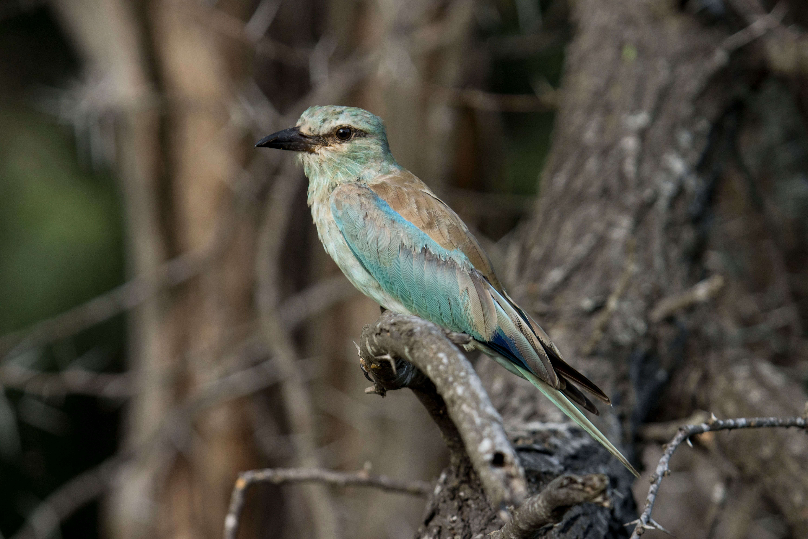

The European Roller is a striking member of the roller family, known for its vivid blue plumage, warm brown back, and contrasting dark flight feathers. It breeds across parts of Europe and western and central Asia before undertaking long-distance migration to wintering areas mainly in sub-Saharan Africa. Compared with the similar Indian Roller, the European Roller generally has a more uniformly blue head and underparts, while the Indian Roller shows more noticeable brown on the head and upperparts. The European Roller also has a more strongly contrasting dark-and-blue pattern on the wings, particularly noticeable when it is in flight. Compared with the similar Dollarbird, the European Roller is more brightly coloured overall and lacks the Dollarbird's distinctive pale circular spots on the wings. Its warm brown back, turquoise-blue body, and dark wing markings give it a distinctive appearance among rollers. The European Roller is usually associated with open woodland, grassland, farmland, forest edges, and other open landscapes where it can hunt insects from exposed perches. Unlike the largely resident Indian Roller in much of the Indian subcontinent, the European Roller is strongly migratory and spends different parts of the year in widely separated regions. Its habit of perching prominently before making short flights to capture prey also gives it the characteristic hunting behaviour shared by other rollers. These differences in plumage, wing pattern, distribution, migration, and habitat help distinguish the European Roller from other similar roller species when it is seen in suitable areas.